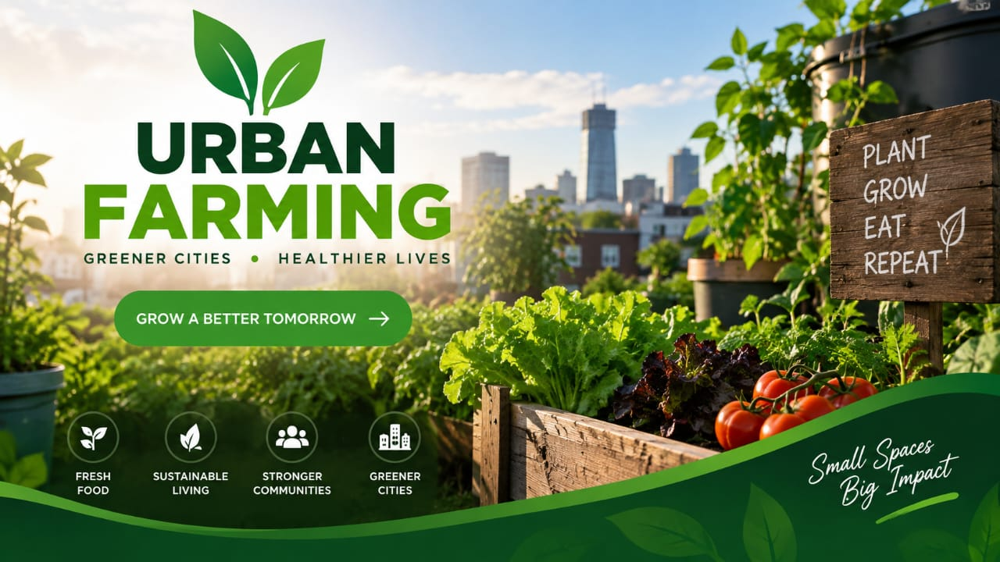

Our Mission
Our mission is to create sustainable urban communities by providing programs that improve people's lives, support local development, and create opportunities.

Building Better Communities Together

Creating opportunities and improving urban communities.
Our mission is to create sustainable urban communities by providing programs that improve people's lives, support local development, and create opportunities.
Supporting communities to grow food and improve food security through urban farming.
Helping communities develop sustainable solutions and create better living environments.
Providing young people with skills, knowledge, and opportunities for a better future.